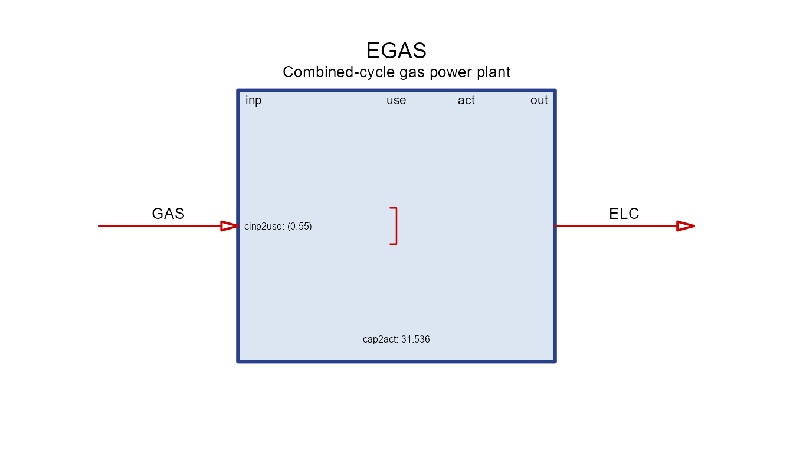
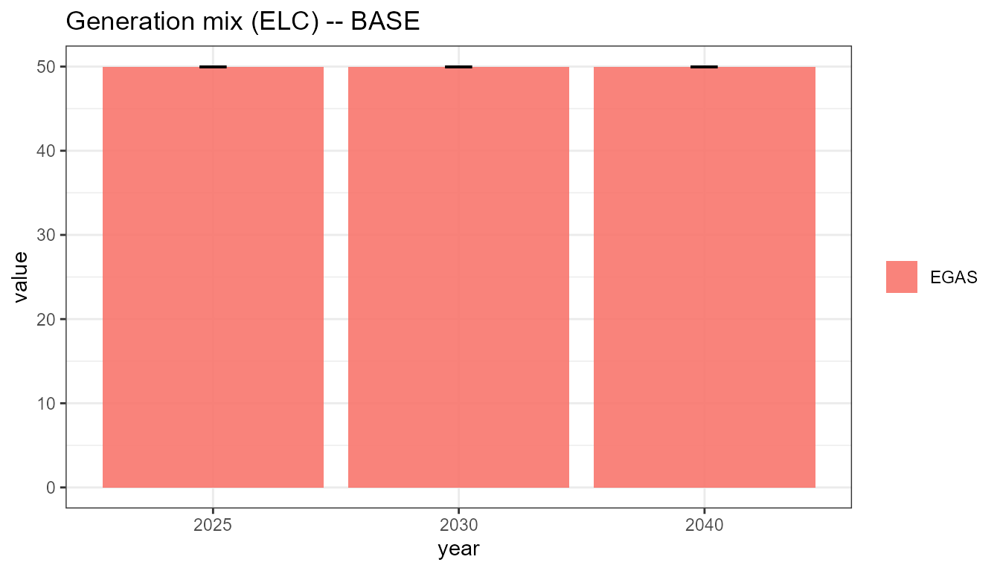
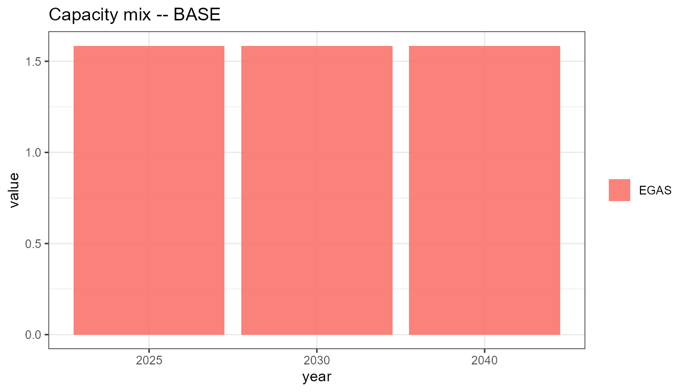

Describe the energy system with reusable components
A comprehensive, modular energy system modeling framework with an R interface.
An energy system is a network of flows. Resources are extracted or harvested, converted by technologies, moved, stored, and consumed as useful energy. Planning that system means deciding what to build, when to build it, and how to operate it while meeting demand and respecting physical and policy constraints.
energyRt is a framework and macro-language for stating that problem in R. Modelers describe commodities, technologies, supply, demand, storage, and trade as reusable objects. energyRt uses those objects to generate the sets, mappings, equations, and solver inputs required by its implementations, then reads the solution back into R.
The package provides modeling machinery rather than a fixed model, dataset, or scenario. The same components can support a small teaching example, a national planning model, or a detailed multi-sector study.
How it works: bricks, time, and space
An energyRt model combines reusable bricks with explicit time and space structures:
- Bricks describe commodities and processes. They are inspectable R objects that can be drawn, updated, reused, and combined in repositories.
- Time comes from a modeler-defined nested timescales calendar. Annual, seasonal, hourly, representative, and sampled resolutions are choices, not package limits. A full 8,760-hour year is one possible calendar; it is not a fixed requirement or ceiling.
- Space comes from a nested geoscales hierarchy. National, zonal, and nodal balances can coexist, with each commodity and process placed where its data belongs. Time, space, and the planning horizon belong to the model configuration rather than to every process definition. A technology can therefore be reused with a different calendar or geographical hierarchy when its data support that change. Solver backends are discussed separately below: they are maintained implementations of the energyRt formulation, not another structural axis.
The central object types are:
| Brick | Constructor | Role |
|---|---|---|
| commodity | newCommodity() |
an energy carrier or accounting flow |
| technology | newTechnology() |
converts inputs into outputs |
| supply | newSupply() |
provides a resource at an availability and cost |
| demand | newDemand() |
defines consumption that must be met |
| storage | newStorage() |
moves a commodity between timeslices |
| trade | newTrade() |
moves a commodity between regions or the rest of the world |
| weather | newWeather() |
supplies exogenous profiles such as capacity factors |
| repository | newRepository() |
collects reusable bricks |
| model | newModel() |
binds a repository to time, space, and a horizon |
| scenario |
interpolate() / solve()
|
materializes and solves one model configuration |
A technology connects
input -> use -> activity -> output; costs,
capacity, availability, emissions, and auxiliary flows attach to that
chain. The model bricks
article develops the complete object system.
A five-minute model
The first model has one fuel, one power plant, and one electricity demand. The units and timeframe are explicit: annual energy is measured in PJ, capacity in GW, and costs in MEUR.
GAS <- newCommodity(
name = "GAS",
desc = "Natural gas",
timeframe = "ANNUAL",
unit = "PJ"
)
ELC <- newCommodity(
name = "ELC",
desc = "Electricity",
timeframe = "ANNUAL",
unit = "PJ"
)
gas_supply <- data.frame(
cost = 6.0
)
SUP_GAS <- newSupply(
name = "SUP_GAS",
desc = "Natural gas supply",
commodity = "GAS",
unit = "PJ",
supply = gas_supply
)
gas_efficiency <- data.frame(
comm = "GAS",
cinp2use = 0.55
)
gas_investment <- data.frame(
invcost = 900
)
EGAS <- newTechnology(
name = "EGAS",
desc = "Combined-cycle gas power plant",
input = list(comm = "GAS"),
output = list(comm = "ELC"),
ceff = gas_efficiency,
invcost = gas_investment,
fixom = 25,
cap2act = 31.536,
olife = 25L
)
electricity_demand <- data.frame(
demand = 50
)
DEM_ELC <- newDemand(
name = "DEM_ELC",
desc = "Annual electricity demand",
commodity = "ELC",
unit = "PJ",
demand = electricity_demand
)
draw(object = EGAS)
Collect the bricks, define a planning horizon, bind the model to one region, and solve it with the bundled GLPK solver:
HELLO_REPOSITORY <- newRepository(
name = "HELLO_REPOSITORY",
GAS,
ELC,
SUP_GAS,
EGAS,
DEM_ELC,
desc = "Components of the introductory electricity model"
)
HELLO_HORIZON <- newHorizon(
name = "HELLO_HORIZON",
desc = "Planning horizon from 2025 through 2040",
period = 2025:2040,
intervals = c(1, 5, 10),
mid_is_end = TRUE
)
HELLO <- newModel(
name = "HELLO",
desc = "Single-region gas-to-electricity model",
data = HELLO_REPOSITORY,
region = "R1",
discount = 0.05,
horizon = HELLO_HORIZON
)
BASE <- solve_model(
object = HELLO,
name = "BASE",
solver = solver_options$glpk,
echo = FALSE
)solve_model() interpolates and solves in one call. The
composable form exposes the intermediate scenario when it needs to be
inspected or modified:
BASE_STAGED <- HELLO |>
interpolate(name = "BASE_STAGED") |>
solve()Results return as tables at the same level of detail as the model:
base_objective <- getData(
object = BASE,
name = "vObjective",
merge = TRUE
)
base_capacity <- getData(
object = BASE,
name = "vTechCap",
merge = TRUE
)
base_objective
#> # A tibble: 1 × 3
#> scenario name value
#> <chr> <chr> <dbl>
#> 1 BASE vObjective 6677.
base_capacity
#> # A tibble: 3 × 6
#> scenario name tech region year value
#> <chr> <chr> <chr> <chr> <int> <dbl>
#> 1 BASE vTechCap EGAS R1 2025 1.59
#> 2 BASE vTechCap EGAS R1 2030 1.59
#> 3 BASE vTechCap EGAS R1 2040 1.59The model built 1.59 GW of gas capacity—enough to supply 50 PJ per year under the declared conversion efficiency. The solved scenario also contains every underlying flow, cost, and balance.
Plot solved results
autoplot() uses the same result tables returned by
getData(). On a solved scenario it can show annual
generation, capacity, new capacity, fuel use, or storage operation. The
annual electricity balance from BASE is:
generation_plot <- autoplot(
object = BASE,
type = "generation",
comm = "ELC"
)
generation_plot
The capacity view reads the same scenario without another solve:
capacity_plot <- autoplot(
object = BASE,
type = "capacity"
)
capacity_plot
Sub-annual models add a dispatch view by selecting timeslices, for
example
autoplot(object = scenario, type = "generation", timeslice = "^SUM_").
Save, find, and reload scenarios
An energyRt project stores scenarios, their runs, and references to
their model inputs. save_scenario() writes the scenario and
adds it to the project registry. The name can then be used instead of a
path:
BASE <- save_scenario(
object = BASE,
verbose = FALSE
)
#> Scenario 'BASE' saved in 'C:/Users/admin/AppData/Local/Temp/RtmpkpDSSr/energyRt-intro/BASE-HELLO-HELLO_HORIZON'
#> Directory size: 0.24 MB
project_registry <- load_registry()
project_registry[, c("type", "name", "parent")]
#> # A tibble: 15 × 3
#> type name parent
#> <chr> <chr> <chr>
#> 1 model HELLO ""
#> 2 scenario BASE ""
#> 3 run glpk "BASE"
#> 4 scenario BASE ""
#> 5 run glpk "BASE"
#> 6 scenario BASE ""
#> 7 run glpk "BASE"
#> 8 scenario BASE ""
#> 9 run glpk "BASE"
#> 10 scenario BASE ""
#> 11 run glpk "BASE"
#> 12 scenario BASE ""
#> 13 run glpk "BASE"
#> 14 scenario BASE ""
#> 15 run glpk "BASE"
BASE <- load_scenario(
path = "BASE",
env = NULL,
verbose = FALSE
)
registered_objective <- getData(
object = "BASE",
name = "vObjective",
merge = TRUE
)
registered_objective
#> # A tibble: 1 × 3
#> scenario name value
#> <chr> <chr> <dbl>
#> 1 BASE vObjective 6677.load_scenarios() loads several registered scenarios as a
named list, while scenario_runs() lists the solves recorded
inside one scenario. Arrow-backed storage allows result tables to remain
on disk until they are queried. See Scenario
management for the registry, object stores, variants, and portable
project bundles.
Sample a calendar
Sampling changes the temporal representation of a scenario. It is
useful for rapid exploration, but it is an approximation unless the
chosen slices are representative. A sample must retain complete members
of a calendar level; calendar_samples() builds valid sample
specifications and records how much of the year each one covers.
data(
list = "topia",
package = "energyRt"
)
s4_h24 <- topia$modules$calendars$s4_h24
SEASON_SAMPLES <- calendar_samples(
calendar = s4_h24,
level = "SEASON",
sample_size = 2,
n = 2,
method = "random",
seed = 2050
)
SEASON_SAMPLES
#> calendar_samples: 2 sample(s), method = random
#> slices per sample: 48-48 | distinct slices used: 96solve_by_sample() interpolates and solves each sample,
preserving the sample definition and its runs. This larger TOPIA example
is not executed while the introductory vignette builds:
TOPIA_KIT <- topia$modules$electricity$R1
TOPIA_SAMPLING <- newModel(
name = "TOPIA_SAMPLING",
desc = "TOPIA model used to demonstrate calendar sampling",
data = TOPIA_KIT$repo,
calendar = s4_h24,
region = TOPIA_KIT$regions,
horizon = topia$modules$horizons$base,
discount = 0.05
)
TOPIA_SAMPLING <- setGeoscale(
obj = TOPIA_SAMPLING,
geoscale = TOPIA_KIT$geoscale
)
TOPIA_SAMPLES <- solve_by_sample(
object = TOPIA_SAMPLING,
name = "TOPIA_SAMPLES",
samples = SEASON_SAMPLES,
solver = solver_options$glpk,
echo = FALSE,
verbose = FALSE
)
sample_summary(
x = TOPIA_SAMPLES,
name = "vTechCap",
by = "tech"
)See Time resolution and Workflow for manual calendar subsets, weighting, repeated samples, and comparisons with a full solve.
One formulation, several maintained backends
energyRt contains implementations of its formulation in several modeling languages. A model object can be compiled through any implementation available in the local environment, but this is concrete package support rather than backend independence in the abstract: each route works because energyRt ships and maintains code for it.
| Route | What the energyRt implementation does | Good fit |
|---|---|---|
| GLPK / MathProg | writes MathProg and solves with bundled glpsol
|
first models, teaching, reproducible local runs |
| Julia / JuMP | writes JuMP for HiGHS, CBC, GLPK, CPLEX, or cuOpt | larger local models and Julia solver environments |
| Python / Pyomo | writes Pyomo for HiGHS, CBC, GLPK, or CPLEX | Python-based solver environments |
| GAMS | writes the formulation in GAMS | established institutional GAMS workflows |
| multimod (experimental) | constructs an in-memory model in multimod’s R DSL/AST, then assembles an LP/MPS matrix, solves with HiGHS, or renders equations as LaTeX; it is not a separate text modeling language | matrix workflows, inspection, and mathematical documentation |
| mmcloud (experimental) | submits large matrix problems to cloud infrastructure and solves them with GPU-capable backends | models that exceed local memory or compute capacity |
Check the toolchains before selecting an optional route.
en_check_dependencies() is read-only;
solve = TRUE additionally verifies configured backends by
solving a small test model.
backend_status <- en_check_dependencies(
solver_pkgs = TRUE,
solve = FALSE
)
julia_components <- c("Julia", "Julia packages")
julia_rows <- backend_status$component %in% julia_components
julia_found <- backend_status$found[julia_rows]
julia_ready <- length(julia_found) == length(julia_components)
julia_ready <- julia_ready && all(julia_found)
if (julia_ready) {
BASE_JULIA <- solve_model(
object = HELLO,
name = "BASE_JULIA",
solver = solver_options$julia_highs,
echo = FALSE
)
}
pyomo_rows <- backend_status$component == "Pyomo"
pyomo_ready <- isTRUE(backend_status$found[pyomo_rows])
if (pyomo_ready) {
BASE_PYOMO <- solve_model(
object = HELLO,
name = "BASE_PYOMO",
solver = solver_options$pyomo_cbc,
echo = FALSE
)
}NEOS provides another remote route for supported solvers without a local license. The solver backends article covers installation, presets, dependency checks, and operational limits.
Generate reports
report() renders object datasheets and model or scenario
reports. A scenario report includes solve status, generation and
capacity charts, costs, and other available results; a process report
documents its declared parameters and diagram. HTML reports require
Pandoc, so these calls are shown but not executed during the vignette
build:
base_report <- report(
object = BASE,
format = "html",
open = FALSE
)
gas_plant_report <- report(
object = HELLO,
name = "EGAS",
format = "html",
open = FALSE
)Reports are cached against the object, template, and arguments; unchanged inputs do not trigger another render. The Reports article covers full scenario reports, process groups, levelized costs, and HTML/PDF/Word output.
From one solve to a study
The first solve uses only a fraction of the framework:
-
Build and reuse.
update()derives variants without duplicating complete formulations; repositories organize components into model libraries. - Represent detail where it matters. Nested timeframes and geographies let different commodities and processes balance at different levels.
- Scale the formulation. Sparse interpolation materializes only the tuples used by a scenario; vintages, clusters, graded resources, and custom constraints extend the model without changing its workflow.
- Manage many runs. Named projects and Arrow-backed scenario folders keep results addressable and allow larger-than-memory analysis.
-
Inspect and validate.
draw(),autoplot(),report(), andverify_solution()expose both declared objects and solved behavior. -
Analyze in R. Results flow directly into
dplyr,ggplot2, and the rest of the R ecosystem without a separate export-import step.
TOPIA, the teaching model shipped with energyRt, connects these ideas in a multi-region electricity system with nested geography and time, storage, trade, capacity expansion, dispatch, and policy scenarios.
Where next
- Model bricks explains the object system in depth.
- TOPIA I builds a complete multi-region electricity model brick by brick.
- TOPIA II solves it and adds policy scenarios.
- Time resolution and Space resolution develop the two structural axes.
- Solver backends covers local, direct-matrix, GPU, and cloud routes.
- Workflow moves from one solve to reproducible scenario studies.
- Scenario management and Reports cover persistent projects and automated outputs.
- Features is the full capability inventory.